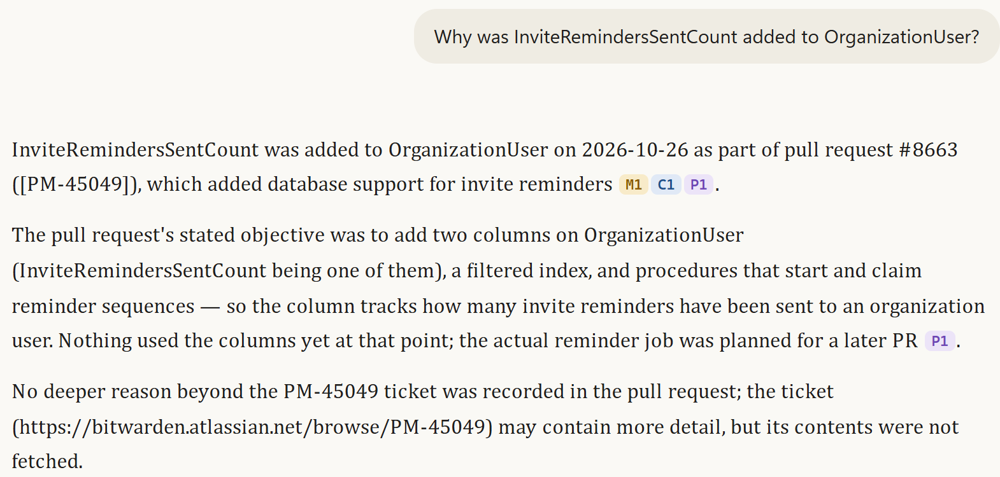
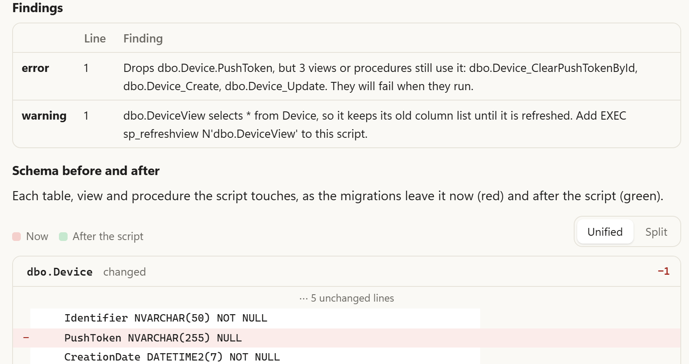
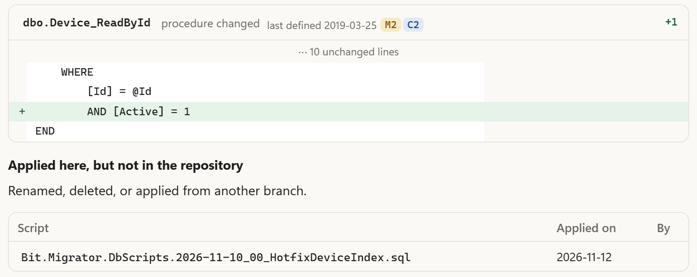
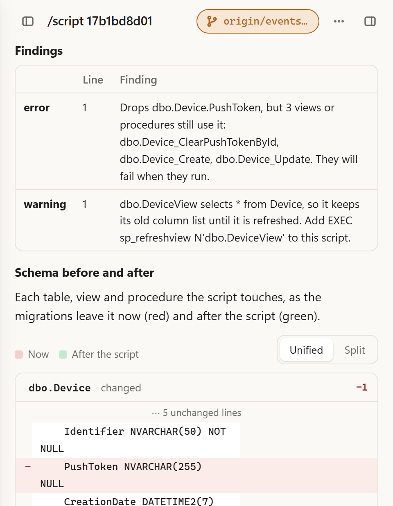

Ask in plain English. Every claim cites its source.
- Follows the migration, to the commit, to the pull request.
- Click any citation to see the source.
- Says so when no reason was recorded, instead of guessing.
Fixes: the lost “why”
Answers from your migrations, commits and pull requests, with the source of every claim.
“Can we drop this column?”
“No idea who added it.”
“The pull request is three years old.”
“Ask whoever wrote it. They left last year.”
So nobody touches it. Or someone does, and something breaks.
Problem 1
Say what changed, never why.
“update schema”, “fix”, “wip”.
The real reasoning, buried in years-old threads.
They move teams, or leave.
One answer means digging through all four, by hand.
Problem 2
Problem 3
Still backed up, migrated and maintained.
Still in every SELECT *, every view, every API.
Still slowing down every write.
Nobody can prove they’re unused, so nobody removes them. The schema only grows.
Problem 4
DBAs
Have to leave it to dig through repositories they don’t own.
Developers
Review migrations with no view of what depends on them.
AI agents
With no idea of the schema’s history, or what will break.
Everyone stops their work to go digging.
The solution
Read-only. Runs on your machine.
How it works
Inside the engine
Local storeSQLite in ~/.crux · chats, sources, usage · connections encrypted (DPAPI)
Ask why, get the receipts
Fixes: the lost “why”

Know before you change
Check this script before you run it./pr on every pull request, and crux check in CI./impact: every key, index, view and procedure that depends on it.Fixes: invisible breakage

See what production really does
/drift: what was changed by hand./deployed: which scripts reached it, and what got slower./usage: size, growth, what nothing uses, and the quietest hour to change it.Fixes: guessing about production

Right inside SSMS 22

Fixes: switching tools
Gives your AI agents a memory
check_script.Fixes: agents writing migrations blind
Ready-made reports
/explaina table, and why it exists/columna column’s whole story/impactwhat depends on it/changeswhat changed, and why/whoone person’s changes/droppedwhat went, and why/renamesold names to new/unexplainedchanges with no reason/staletables untouched longest/errelationship diagram/comparerelease against release/describedrafts missing descriptions/prchecks a pull request/drifthand changes in the database/usagewhat’s used, what isn’tFixes: missing documentation · Built by code from the history, not by a model
Built to be trusted
Never writes to your database. Catalog and statistics only.
Every claim links to the migration, commit or pull request behind it.
Says when the history records no reason, instead of guessing.
Runs on your machine. Your repositories stay where they are.
Query text and plans never leave Crux. Connections are encrypted.
Free NVIDIA models, local Ollama, Claude, or your AI tool’s own.
Before and after
/impact lists every dependentCheck this script, before it runs/drift shows every hand change/usage shows reads, writes and sizeFor Redgate
What changed, and when. And applies it reliably.
Why it changed, and what the next change will break.
flyway.toml, V__ scripts, the schema history table.Try it on your own database
Install Crux. No admin rights.
Point it at your repository, or paste a GitHub link.
Ask why.
github.com/ZEUSXXIV/crux-downloads
Crux 0.2.0 · Windows · Add it to SSMS from Setup, and to your AI tools from Settings.